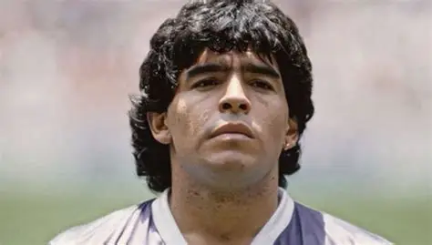

Miksi Maradona on G.O.A.T.?

Vaikutus suhteessa ympäristöön
Napoli. Tämä on se juttu, jota kukaan muu ei ole tehnyt.
Maradona meni 1984 Etelä-Italian köyhään keskitason seuraan, joka oli edellisenä kautena ollut lähellä putoamista, ja teki siitä Italian mestarin 1987 ja 1990 sekä UEFA-cupin voittajan 1989.
Serie A oli silloin kiistatta maailman kovin sarja — Milan (Gullit, Van Basten, Rijkaard), Inter (saksalaiset), Juventus — ja Napoli voitti ne pohjoisen miljardiseurat pelaajistolla, joka ilman Maradonaa oli keskikastia.
Yksittäisen pelaajan panos joukkueen tasoon ei ole missään ollut näin räikeä.
MM 1986
Käytännössä yhden miehen turnaus: 5 maalia, 5 syöttöä, ratkaisi puolivälierän ja välierän itse ja syötti finaalin voittomaalin.
Argentiinan muu kokoonpano oli hyvä muttei poikkeuksellinen. Ei ole toista MM-kultaa, jossa yhden pelaajan osuus olisi näin dominoiva.
Konteksti
80-luvulla puolustajat saivat taklata tavalla, joka nykyään olisi suora punainen. Maradona sai jatkuvasti tarkoituksellista väkivaltaa (Bilbaon Goikoetxean murtama nilkka 1983) eikä sääntökirja suojellut häntä.
Tekninen taso ahtaassa tilassa, tasapaino ja vasemman jalan kontrolli täydessä vauhdissa olivat siinä ympäristössä eri planeetalta.
Kohokohtia
Video: Zinedine Zidane 10, YouTube (avautuu uuteen välilehteen)